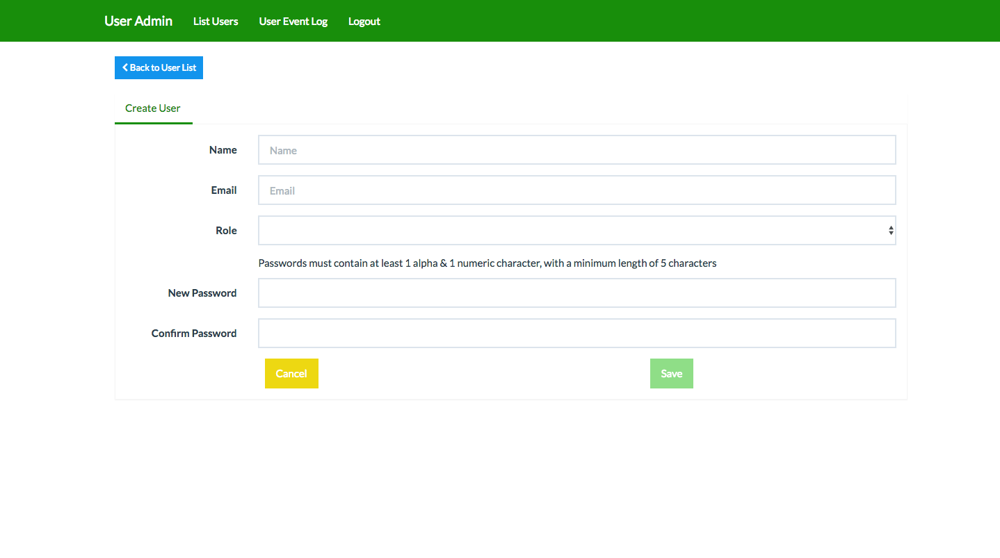

User Admin¶
erdiko/user-admin package
Installation:
composer create erdiko/user-admin
Git repo: https://github.com/Erdiko/user-admin
Intro¶
The user-admin package provides a secure and attractive UI for managing users with our Erdiko framework. The UX is provided by an AngularJS Application served by our very own Erdiko framework.
The Angular Application itself is based on a Angular CLI application that imports our custom ngx-user-admin package from npm. This package is used to define the angular routes and provide the services and components used to create the UX.
The Erdiko application serves the JS files required for the Angular application as well as providing the routes for the AJAX requests.
Example page: Create user 
Docker (Quick Start)¶
To use docker and composer to start your environment
composer create erdiko/user-admin
cd user-admin
docker-compose up -d
This will give you a set of containers for a working website (running mysql, php and nginx). In order to use the admin and get started managing users you still need to populate the database. We have a convenient script to do just that.
docker exec -it erdiko_users_php /code/scripts/install-db.sh
Now you are ready to login and use the Erdiko User Admin.
Note
If you don't have composer, refer to these installation instructions. For the most up to date installation instructions refer to the user-admin README file.
Default Login¶
If you followed the quick start instructions from the readme, it will create a sample admin user for you. You can login with the following credentials:
- username: erdiko@arroyolabs.com
- password: password
How Erdiko serves the Angular application (GUI)¶
This Erdiko application serves up the Ajax endpoints and the JavaScript files that bootstrap the Angular JS application.
In our user-admin erdiko theme, user-admin\app\themes\user-admin, we use the theme.json file to define which Javascript files are included on the page to serve the Angular application. Please refer to our erdiko documentation for more information on customizing themes and routes.
The build npm script (noted below) from the Angular CLI application actually compiles the typecsript into common JS files. We would highly recommend reviewing this file if you plan on editing any of the Angular code.
Setup / Configuration of ngx-user-admin for local development (optional)¶
If you wish to modify the existing Angular application you will need to have a local development environment. For example you may wish to customize a component by extending it or create a new component and add it to your app.
Running the Angular CLI application locally is an easy way to see your changes quickly before "building" and allowing the Erdiko Application to serve the compiled files.
The source of the Angular code is at user-admin/app/themes/user-admin/src/app
NPM Local Server¶
This command will start the npm server locally. Files in the angular application are then "watched" and updates to the angular application will be displayed once you save the files.
You can view the local server at this address: http://localhost:4200
cd app/themes/user-admin/src/app
npm run start
Compiling your changes¶
Once you have tested and completed your updates, you must "build" the application to compile the typescript to be served by the erdiko application. This step is required before any code can be deployed to a staging or production server.
npm run build
You can view the Erdiko application at this address: http://docker.local:8088